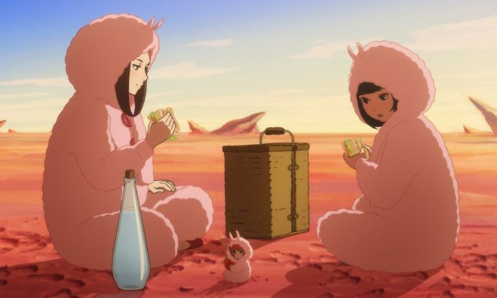

From a lack of promotional trailers and marketing, and a more limited-than-usual theatrical release in the USA (at least for 2020), had me go into "The Wonderland" (with the better Japanese title of "Birthday Wonderland") blind. And that lack of marketing was likely it's biggest downfall, as the posters and few screenshots it had made me certain that it was a CGI anime: I almost determined I wouldn't bother seeing it at all! Yes, by now we've seen enough examples of Japan producing great CGI, but whenever they insist on attempting to reproduce the "2D anime" style, it's always a disappointment. So I was pleasently surprised to watch the movie and see that virtually all of its' character animation was 2D, from start to finish, with 3D only utilized for backgrounds, and a handful of non-human characters. ... at least, I "think" it was 2D. Unlike most anime, "The Wonderland" chose to animate everyone in a grounded, hyper-realistic manner. It isn't ultra smooth (I think it's still mostly 12 fps instead of 24 fps), but it's detailed. In early scenes, we see a character slowly spread butter and margarine on a piece of toast, and another character "hurry" to grab a backpack to go on an adventure, carefully walking around her table to fetch it, in a long dress and with mannerisms of a real Japanese woman. And generally, lighting of shadows on character models is consistent, further blurring the line. I'm certain that 3D models were used as reference before animating the final scenes, but if it turned out that more than 1% of character animation here was CGI, than this would be the first time I've been fooled.You would think this is high praise for the animation. However, despite plenty of fun facial expressions, the body language never felt expressive in the way that makes animation so beloved. This is the first time I would describe 2D animation as "uncanny," and I'm not certain that I'd care to see it again, no matter how much effort was put into it. But again, if this turned out to be primarily CGI, than it could very well replace 2D anime across the industry, with little to no complaints (or even awareness) by the devoted fan-community. A lot has been made about the character designs coming from Russian illustrator Ilya Kuvshinov. It's rare for "outsiders" to ger in the anime industry (although it's slowly becoming more common), so it warrants attention. Kuvshinov is a popular designer with a style that lends well to standard anime, with a focus on rounded, cute faces, defined lips, and large Asian-looking eyes, with a large iris but a small, clearly defined pupil. For the most part, most viewers of "The Wonderland" won't notice, apart from remarking that "the eyes look kinda wierd." Personally, I appreciated the movie attempting to have a distinct look, even if the style is only a minor deviation from decades of anime. The rest of the movie looks handsome, with bright colors and detailed cities, and a lot of especially cute wild animals, with the main issue being how generic the many different regions of the movie look. ... that's a lot of up-front discussion about the visuals. But what is "The Wonderland" actually about? Despite the title, it has nothing to do with the story "Alice in Wonderland," but tries instead ot be a modern version of Ghibli's "Spirited Away." In fact, it tries very hard to be that type of magical family-friendly adventure that Ghibli was famous for, but instead comes off with more in common to "Welcome to the Space Show" or "Steamboy," or possibly even the video game series "Ni No Kuni." Things get started when young girl Akane (roughly 12 years old, I think) skips school, but being quickly forgiven by her cool mom, is sent on an errand to Chii, a quirky family friend who runs a antique shop. After touching a old artifact, a well-dressed man with a moustache appears from the shop's basement, insisting that Akane is the "Goddess of the Green Wind," and that they must leave immediately. Akane is led against her will, and Chii, all too eager to go on an adventure, tags along. Like many stories that have come before, these regular characters find themselves in a magical alternate world, experiencing its colorful wonders with awe. In this case, the problem is a world-wide drought that is slowly stealing color from the world, and a prince that is unable to perform the ceremony to fix it. There's also a mysterious skeleton-man driving a metal tank across the land, stealing any metal he can find.  It's difficult to write a good story in this genre. In the case of "The Wonderland," the wonders they come across include colorful flowers, large birds and sheep, and talking cats, as well as colorful environments of sand, snow, and forest. It's all pretty, but is almost too ordinary to qualify as wonderous, especially compared to the trippy imagination of "Alice in Wonderland" or "Spirited Away." And the biggest problem is the story: despite the seemingly urgent situation, Akane and Chii and their guides take their sweet time reaching the kingdom where the prince lives, relaxing in the atmosphere, and treating the adventure as a road trip (and yes, they drive a standard automobile in this alternate world). After days of travel, and arbitrary dangers and rules explained in each new region, they finally reach their destination and reveal the mystery of the drought... which, despite cool character design, makes the film's villain one of the most lukewarm I've seen, with a disappointing backstory and motivation. Not to mention that Akane's important role doesn't turn out to be particularly important: virtually anyone could have done what little she does to save the day. At the end, we also learn the group had secret fuel for their car, which would have allowed them to make the three-day trip in a matter of moments (which they do at the last minute to retrieve something from a house and return, for arbitrary reasons). If you think too hard, you'll find other nitpicks, like an opening scene about schoolgirls talking about hairpins, leading to a scene of indirect bullying; the scene and the school never gets addressed ever again. The nearly two-hour adventure is aimless, so it drags a bit in length. Its saving grace is its sence of humor. Poor Akane is given a magical necklace that forces her to "constantly move forward" early on, not allowing her to return home even when she wants to... or even to run away in situations when she has to: one scene has her friends carry her off when her body can't move. The casual Chii and serious Midori are fun to watch through their argumentative banter. And everything is just so cute! I want a plushy of EVERYTHING! The humor and action is fine to show to young children, aside from a couple questionable recurring jokes, including a pet cat sitting its butthole of Akane's face, or a couple pats of her butt with the statement that "she'll grow out in a few years." The music in "The Wonderland" deserves special mention. It's cinematic and helps a lot to bring the film to life, but at times it can be a little "too" good, distracting from the film's content with creative use of punk rock in certain scenes. I watched this in original Japanese in the theater, and was happy with it, but for the target audience, I would be surprised if an English dub doesn't surface at some point.Ultimately, "The Wonderland" is charming, but like it's title, forgettable. A tighter script or more imaginative settings might have improved things. But the movie is worth watching for the production values alone, and with family-friendly anime being so rare, this might be a good entry point for young audiences.
- "Ani" More reviews can be found at : https://2danicritic.github.io/ Previous review: review_The_Wind_Rises Next review: review_This_Boy_Can_Fight_Aliens